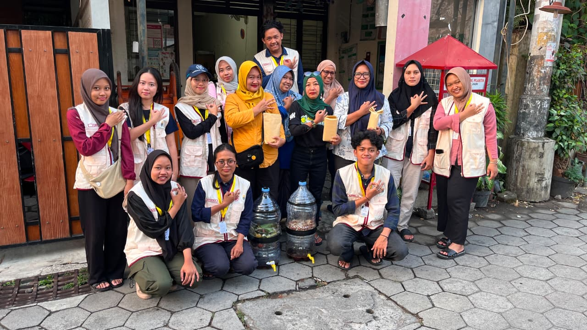
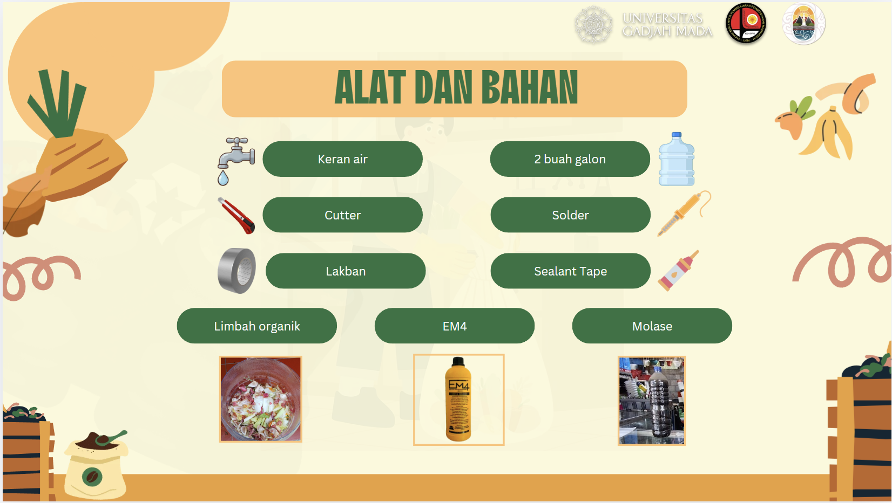
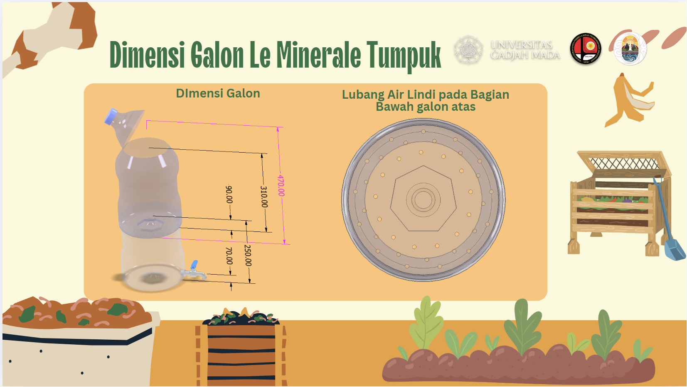
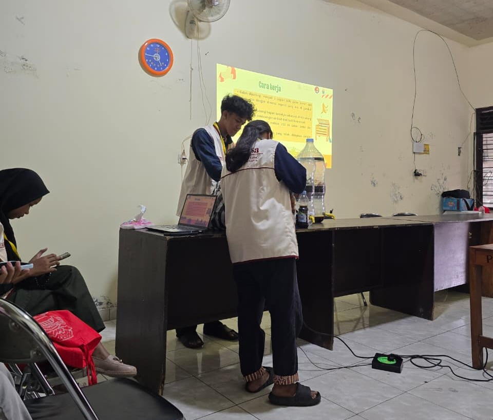

arrow_back
Kembali ke Program dan Materi
Panduan
Pembuatan Pupuk Organik Cair (POC) dengan Memanfaatkan Limbah Organik Menggunakan Media Galon Tumpuk
Media ini berisi panduan mengenai pembuatan pupuk organik cair (POC) dengan memanfaatkan limbah organik rumah tangga menggunakan media galon tumpuk. Materi meliputi alat dan bahan, tahapan pembuatan, proses fermentasi, cara pemanenan dan penggunaan POC, serta manfaatnya dalam mengurangi limbah organik, mendukung pertanian ramah lingkungan secara berkelanjutan, serta mengurangi penggunaan pupuk kimia.

Materi dan Media
Akses panduan lengkap langkah demi langkah pembuatan POC dengan galon tumpuk.
Dokumentasi Kegiatan



